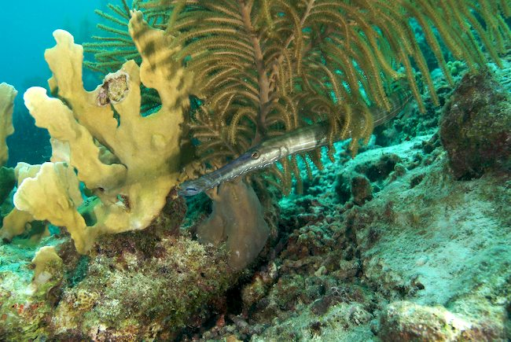

Bonaire May 2007
Index
Previous
8 of 52
Next
Rating: 3
Badges: Adjusted Keyword
Aperture: f/7.1
Shutter Speed: 1/80
Exposure Bias: 0ev
Focal Length (35mm): 36mm
Focal Length: 24mm
Keywords: Bonaire, Diving, Underwater Photography
Name: Bonaire 2007-05-07 14-31-24
Image Date: 5/7/07 2:31:21 PM GMT+05:00
ISO Speed Rating: ISO200
File Size: 15.99 MB
Master Location: Bonaire 2007-05
